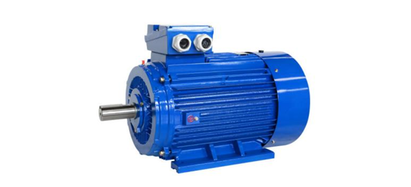

符合 GB 18613-2020 2级能效等级，您的节能优选方案

YE4 系列超高效率三相异步电动机，是严格按照最新行业标准打造的节能标杆产品。它不仅为您带来卓越的动力表现，更能大幅削减企业的长期用电成本：
* 以下仅摘录部分代表性型号的参数。YE4 系列功率全面覆盖 0.75kW ~ 315kW，最高效率可达惊人的 96.0%。完整极数（2/4/6极）及全部型号参数，请在下方下载产品样本查阅。
| 机座号 (Frame) |
额定功率 (kW) |
满载转速 (r/min) |
额定电流 (A) |
效率 (Eff. %) |
功率因数 (COSΦ) |
|---|---|---|---|---|---|
| 80M1 | 0.75 | 2890 | 1.6 | 83.5 | 0.83 |
| 160M1 | 11 | 2960 | 20.1 | 92.6 | 0.89 |
| 250M | 55 | 2980 | 96.6 | 95.0 | 0.90 |
| 355L2 | 315 | 2985 | 538.0 | 96.0 | 0.92 |
我们为您准备了完整的 PDF 参考图册与详细的 Excel 安装尺寸数据表。